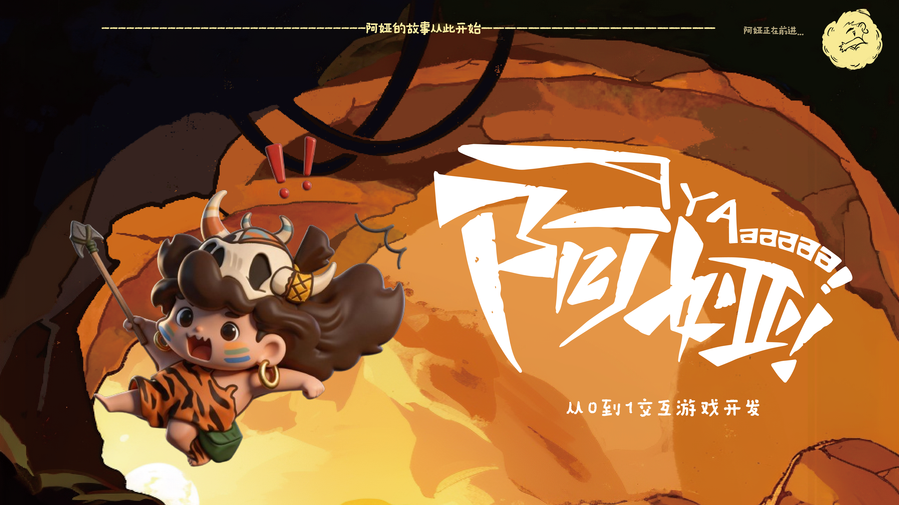
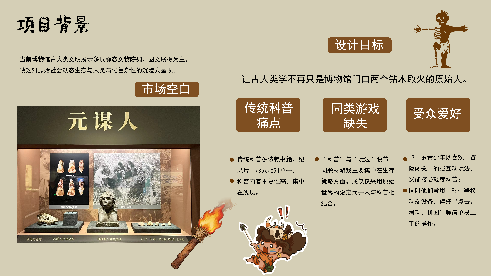
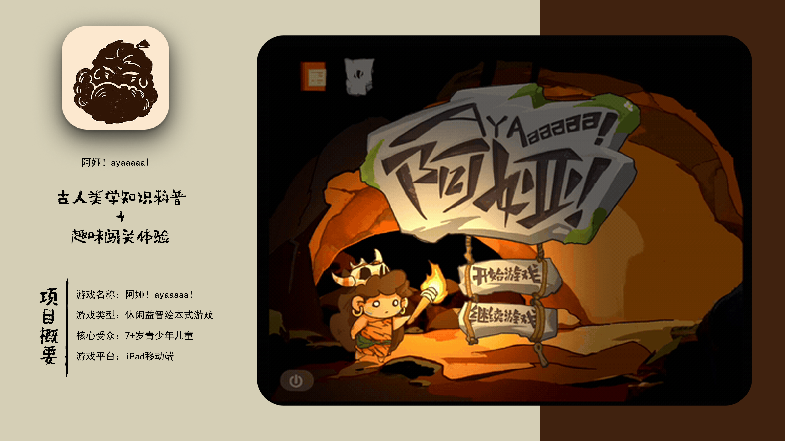
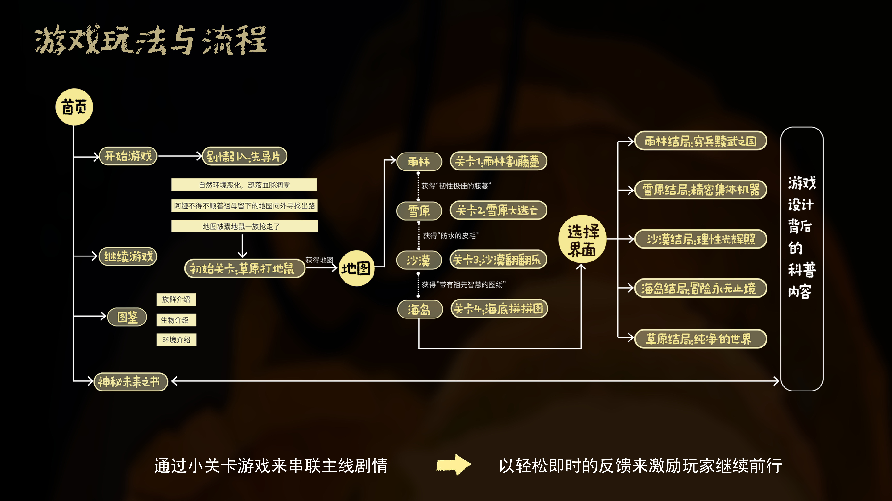
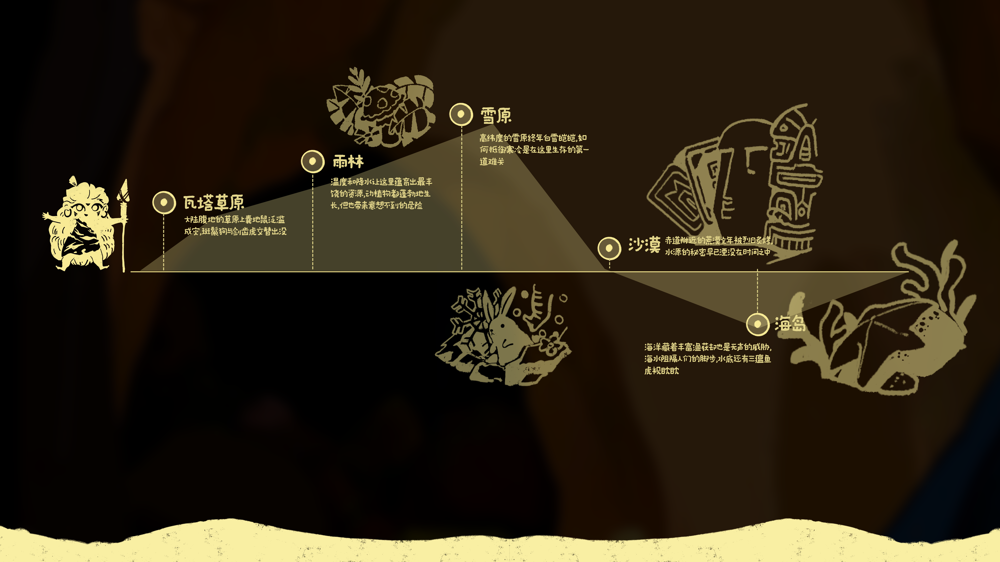
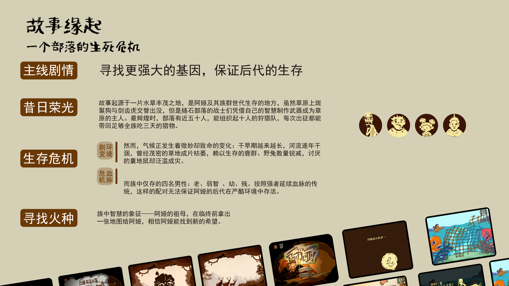
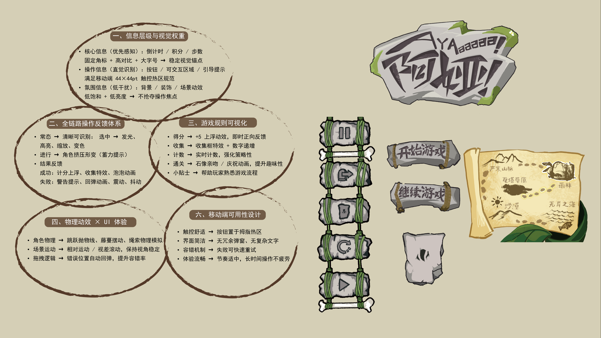
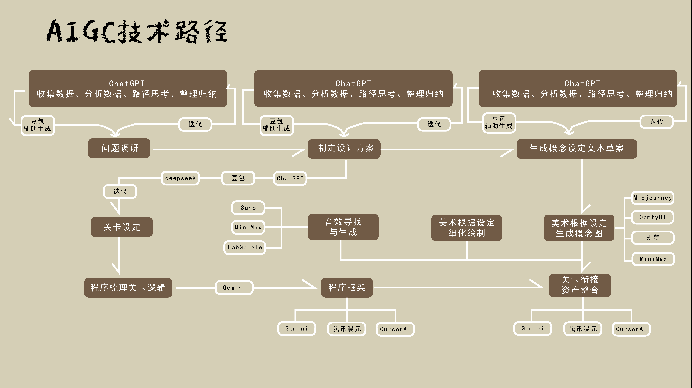
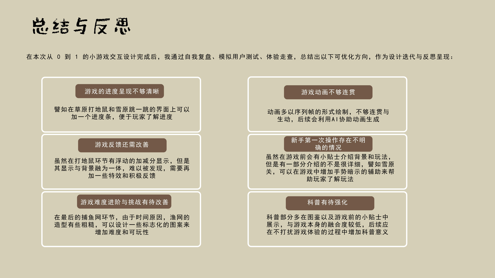

项目概览
Ayaaaaa! 是一个游戏视觉与 UI 设计项目，聚焦沉浸氛围与界面可读性。项目输出包含演示视频与关键页面风格稿，适配桌面端与移动端浏览。
Game Visual Design
以玩法节奏为核心，建立统一的游戏视觉语言与界面层级。
Ayaaaaa! 是一个游戏视觉与 UI 设计项目，聚焦沉浸氛围与界面可读性。项目输出包含演示视频与关键页面风格稿，适配桌面端与移动端浏览。











你是一名普通的都市上班族，连续数周加班后，某个深夜的末班地铁站成了你意识的牢笼。疲惫与压力侵蚀着你的理智，日常通勤的场景开始变得诡异。
58 同城的招聘海报模特微笑消失，标语变为“你今天加班了吗？”；垃圾桶堆满皱巴巴的文件纸，印着“KPI”“Deadline”。大嘴怪物以及诡异机械女在后面追赶着你。这些异常并非幻觉，而是现实压力在你潜意识中的具象化投射。唯有在循环中直面它们，才能登上真正通往“归途”的列车。你需要找到异常并不被怪物追到，才能活着回家。
经典的找异常游戏。游戏共设置六个关卡，第一关是正常场景关卡，玩家需要记住场景中的细节；在之后的每个关卡里，可能会出现与正常场景不同的异常地方，玩家需要判断当前场景中是否存在异常，并作出正确的选择以进入下一关。部分特殊异常关需要按照对应规则进行才可通关。